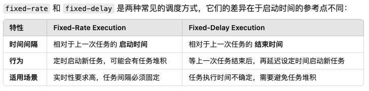

Timer
这一章是为了学习 Java 的 Timer 类来写的，同时也来学习一下源码。
Introduce
简单的了解一下 Timer 这个类的作用, Timer 类是用来执行计划任务的，它可以在指定的时间执行某一个任务，也可以在指定的时间开始执行某一个任务，还可以在指定的时间开始执行某一个任务，并且按照固定的速率重复执行。
但是 Timer 仅仅是按照需要执行的时间进行一个调度，但是没有考虑到优先级，因为可能会出现同一的执行时间下，进行相关的调度。
1
2
3
4
5
6
7
8
9
10
11
12
13 | Timer timer = new Timer();
TimeTask task = new TimeTask(){
public void run(){
System.out.println("Hello World");
}
};
// 延迟 1s 后执行
timer.schedule(task,1000);
// 延迟 1s 固定间隔 1s 周期打印一次
timer.schedule(task,1000,1000);
// 延迟 1s 固定速率每隔 1s 执行一次
timer.scheduleAtFixedRate(task,1000,1000);
|
Timer 的实现原理
我们先来看一下 Timer 的内部结构
1
2
3
4
5
6
7
8
9
10
11
12
13
14
15
16
17
18
19
20 | public class Timer {
// 任务队列
private final TaskQueue queue = new TaskQueue();
// 工作线程，循环取任务
private final TimerThread thread = new TimerThread(queue);
private final Object threadReaper = new Object() {
protected void finalize() throws Throwable {
synchronized(queue) {
thread.newTasksMayBeScheduled = false;
queue.notify(); // In case queue is empty.
}
}
};
// Timer的序列号，命名工作线程（静态变量，在启动多个Timer的情况可以用于区分对应的工作线程）
private final static AtomicInteger nextSerialNumber = new AtomicInteger(0);
}
|
我们先看一个 Timer 对象的内部定义，它有一个 TaskQueue 对象，一个 TimerThread 对象，一个 threadReaper 对象，一个 nextSerialNumber 对象。
-
TaskQueue 对象是一个任务队列，用来存储任务，我们每创建一个任务就往任务队列中添加一个任务。因为我们要考虑并发的问题，所以我们需要对任务队列进行加锁。
-
TimerThread 对象是一个工作线程，它是一个循环取任务的线程，我们每次往任务队列中添加一个任务，它就会去取任务。因为我们需要管理这些任务线程。
-
threadReaper 对象是一个线程回收器，它是一个内部类，用来回收线程的。
-
nextSerialNumber 对象是一个静态变量，用来命名工作线程的，因为我们可能会启动多个 Timer 对象，所以我们需要对工作线程进行命名。
TaskQueue
这里是有关 TaskQueue 的源代码
1
2
3
4
5
6
7
8
9
10
11
12
13
14
15
16
17
18
19
20
21
22
23
24
25
26
27
28
29
30
31
32
33
34
35
36
37
38
39
40
41
42
43
44
45
46
47
48
49
50
51
52
53
54
55
56
57
58
59
60
61
62
63
64
65
66
67
68
69
70
71
72
73
74
75
76
77
78
79
80
81
82
83
84
85
86
87
88
89
90
91 | class TaskQueue {
private TimerTask[] queue = new TimerTask[128];
private int size = 0;
int size() {
return size;
}
// 需要值得注意的是，每次我们添加一个任务元素的时候，都需要向上维护这个最小堆，因为是将它置于数组的末尾。
void add(TimerTask task) {
if (size + 1 == queue.length)
queue = Arrays.copyOf(queue, 2*queue.length);
queue[++size] = task;
fixUp(size);
}
TimerTask getMin() {
return queue[1];
}
TimerTask get(int i) {
return queue[i];
}
void removeMin() {
queue[1] = queue[size];
queue[size--] = null; // Drop extra reference to prevent memory leak
fixDown(1);
}
/**
* Here the quickRemove is used to remove the specific
* task in the queue,but it do not guarantee the
* order of the queue.
*/
void quickRemove(int i) {
assert i <= size;
queue[i] = queue[size];
queue[size--] = null; // Drop extra ref to prevent memory leak
}
void rescheduleMin(long newTime) {
queue[1].nextExecutionTime = newTime;
fixDown(1);
}
boolean isEmpty() {
return size==0;
}
void clear() {
for (int i=1; i<=size; i++)
queue[i] = null;
size = 0;
}
// 向上维护这个最小堆 ;
private void fixUp(int k) {
while (k > 1) {
int j = k >> 1;
if (queue[j].nextExecutionTime <= queue[k].nextExecutionTime)
break;
TimerTask tmp = queue[j]; queue[j] = queue[k]; queue[k] = tmp;
k = j;
}
}
// 向下维护这个最小堆 ;
private void fixDown(int k) {
int j;
while ((j = k << 1) <= size && j > 0) {
if (j < size &&
queue[j].nextExecutionTime > queue[j+1].nextExecutionTime)
j++; // j indexes smallest kid
if (queue[k].nextExecutionTime <= queue[j].nextExecutionTime)
break;
TimerTask tmp = queue[j]; queue[j] = queue[k]; queue[k] = tmp;
k = j;
}
}
void heapify() {
for (int i = size/2; i >= 1; i--)
fixDown(i);
}
}
|
首先，我们观察TaskQueue 的源代码可以发现，这个其实就是一个以execTime 作为维护的变量的一个最小堆。我们需要保证他们按照执行时间进行排序。我们可以看到这里有一个fixUp 和 fixDown 方法，这两个方法就是用来维护这个最小堆的。这个最小堆同时也具有自动扩容的功能。
TimerThread
首先来看这个类的内部组成
| class TimerThread extends Thread{
boolean newTasksMayBeScheduled = true;
private TaskQueue queue;
TimerThread(TaskQueue queue){
this.queue = queue;
}
}
|
其实就是一个类，它用来维护执行那个任务队列。我们可以看到这个类是继承了Thread 接口，也就是说它是一个一直进行的线程。同时我们可以看到这个类有一个newTasksMayBeScheduled 变量，这个变量是用来控制是否可以添加新的任务的。也就是换句话说，其实就是一种告知我们已经启用了 ThreadReaper 这个线程了，作为Timer的对象清理处理程序。当计时器对象没有实时引用且计时器队列中没有任务时，这会导致执行线程优雅地退出。
然后继续来看这个类是怎么运行的
1
2
3
4
5
6
7
8
9
10
11
12
13
14
15
16
17
18
19
20
21
22
23
24
25
26
27
28
29
30
31
32
33
34
35
36
37
38
39
40
41
42
43
44
45
46
47
48
49
50
51
52
53 | public void run() {
try {
mainLoop();
} finally {
// Someone killed this Thread, behave as if Timer cancelled
synchronized(queue) {
newTasksMayBeScheduled = false;
queue.clear(); // Eliminate obsolete references
}
}
}
private void mainLoop() {
while (true) {
try {
TimerTask task;
boolean taskFired;
synchronized(queue) {
// Wait for queue to become non-empty
while (queue.isEmpty() && newTasksMayBeScheduled)
queue.wait();
if (queue.isEmpty())
break; // Queue is empty and will forever remain; die
// Queue nonempty; look at first evt and do the right thing
long currentTime, executionTime;
task = queue.getMin();
synchronized(task.lock) {
if (task.state == TimerTask.CANCELLED) {
queue.removeMin();
continue; // No action required, poll queue again
}
currentTime = System.currentTimeMillis();
executionTime = task.nextExecutionTime;
if (taskFired = (executionTime<=currentTime)) {
if (task.period == 0) { // Non-repeating, remove
queue.removeMin();
task.state = TimerTask.EXECUTED;
} else { // Repeating task, reschedule
queue.rescheduleMin(
task.period<0 ? currentTime - task.period
: executionTime + task.period);
}
}
}
if (!taskFired) // Task hasn't yet fired; wait
queue.wait(executionTime - currentTime);
}
if (taskFired) // Task fired; run it, holding no locks
task.run();
} catch(InterruptedException e) {
}
}
}
|
我们来看上面的逻辑，其实就是分成了两步。
- 其实就是一直维护运行着
mainLoop的循环，直到我们执行finally子句的时候，就会对queue上synchronized同步锁（任何想进入synchronized(queue)这个线程的代码块都会被阻塞），然后清空队列，然后退出线程。synchronized(queue)
TimerTask
我们先对 TimerTask 进行一个解释，TimerTask 是一个抽象类，它是一个任务类，我们可以继承这个类来实现我们的任务。
里面有几个值得注意的成员变量，来方便我们理解

同时，TimerTask 有几个状态常量需要注意:
static final int VIRGIN = 0 : 表示的是这个任务还没有被调度static final int SCHEDULED = 1 : 表示这个任务已经被调度，特别的如果是单执行的任务，这个说明还没有被执行。我们这里的调度是指已经加入了任务队列。static final int EXECUTED = 2 : 表示这个任务已经被执行了static final int CANCELLED = 3 : 表示这个任务已经被取消了
下面继续看源代码
首先，这个 mainLoop() 主循环的逻辑是这样的：
-
先查看这个任务队列是否为空？如果为空，那么就会一直等待，直到有任务加入。除非已经 newTasksMayBeScheduled 为 false, 那么就会退出这个主循环。
-
由于queue是一个共享资源，也就是说很多线程都可能会同时来访问这个共享资源，会造成 竞态问题，所以我们选择了给queue加上同步锁，来避免线程冲突。
-
然后就是进行任务调度的阶段了
- 我们取出执行时间最近的任务，来进行判断。
- 如果取出的这个任务被取消了，那么就直接跳过这个任务。
- 我们这里使用了一个
taskFired 变量，来作为标志，判断这个任务是否被触发了？
- 倘若没有被触发，也就是执行时间在我们当前时间之后，那么就会等待这个任务的执行时间。
- 倘若触发了，那么我们会通过判断这个任务的
period来进行相应的逻辑处理。
- 如果
period == 0 表示的是这个任务不会重复执行，那么就会将这个任务从队列中移除。
- 如果
period > 0 表示的是这个任务会以固定的速率执行，那么就会重新调度这个任务。
- 如果
period < 0 表示的是这个任务会以固定的延迟执行，那么就会重新调度这个任务。
接下来来分析Timer的具体实现逻辑，因为有几个方法
schedule 方法
private void sched(TimerTask task, long time, long period) 方法
1
2
3
4
5
6
7
8
9
10
11
12
13
14
15
16
17
18
19
20
21
22
23
24
25
26
27
28
29
30 | /**
* Schedule for the task;
*/
private void sched(TimerTask task, long time, long period) {
if (time < 0)
throw new IllegalArgumentException("Illegal execution time.");
// Constrain value of period sufficiently to prevent numeric
// overflow while still being effectively infinitely large.
if (Math.abs(period) > (Long.MAX_VALUE >> 1))
period >>= 1;
synchronized(queue) {
if (!thread.newTasksMayBeScheduled)
throw new IllegalStateException("Timer already cancelled.");
synchronized(task.lock) {
if (task.state != TimerTask.VIRGIN)
throw new IllegalStateException(
"Task already scheduled or cancelled");
task.nextExecutionTime = time;
task.period = period;
task.state = TimerTask.SCHEDULED;
}
queue.add(task);
if (queue.getMin() == task)
queue.notify();
}
}
|
需要注意的是主要是进行几个边界处理
time<0 防止添加的时间是一个负数，那么就会导致最小堆里永远都是这个任务，但是始终不会执行period 的绝对值不能太大，防止溢出newTasksMayBeScheduled 为 false 的时候，就会抛出异常，也就是说我们这个Timer对象已经进行了clean操作，那么就不能再添加任务了。
因为要防止其他的线程对当前要添入任务队列的任务进行操作，我们需要对这个任务进行加锁，然后进行相应的操作。同时因为queue是一个共享的资源，我们如果发现当前的任务最小值就是我们刚添入的任务，那么就会queue.notify()，告知其他正在等待消费的线程，我们已经添加了一个即将执行的任务。
public void schedule(TimerTask task,Data firstTime, long period)
| public void schedule(TimerTask task, Date firstTime, long period) {
if (period <= 0)
throw new IllegalArgumentException("Non-positive period.");
sched(task, firstTime.getTime(), -period);
}
|
... 后续的几个方法都类似，就不再赘述了。